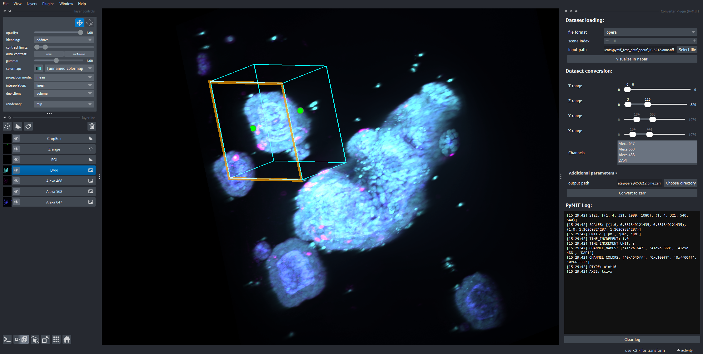

PyMIF — Python code for users of the Mesoscopic Imaging Facility
PyMIF (source code here) is a modular Python package to read, visualize, and write multiscale (pyramidal) microscopy image data from a variety of microscope platforms available at the Mesoscopic Imaging Facility (MIF) into the OME-NGFF (Zarr) format.
Note
As of v0.3.0, PyMIF follows NGFF v0.5 standards. Datasets created with older version of PyMIF (e.g. 0.2.4) can still be loaded using the manager ZarrV04Manager as shown in examples.
📦 Features
✅ Read and parse image metadata from multiple microscope vendors and data formats:
Viventis LS1 (
.ome + .tif)Luxendo (
.xml + .h5)Opera PE (
.ome.tiff)Zeiss (
.czi)Leica SCAPE (
.ome.tiff + .xlif)Generic OME-Zarr
Numpy or Dask array
✅ Abstract base class
MicroscopeManagerensures uniform interface for all readers✅ Lazy loading via Dask for memory-efficient processing
✅ Build pyramidal (multiscale) OME-Zarr archives from raw data or existing pyramids
✅ Write OME-Zarr with:
Blosc or GZIP compression
Nested directory layout
Full NGFF + OMERO metadata (channel names, colors, scales, units)
Optional parallelization with
dask-distribute
✅ Command line interface (CLI) available for batch conversion.
✅ Visualize pyramids in Napari using
napari-ome-zarrplugin:Using lazy loading for fast visualization, or
Using in-memory loading of any resolution layer for interactivity.
✅ Compatible with automated workflows and interactive exploration (Jupyter + scripts)
🚀 Getting Started
📥 Installation
It is recommended to install miniforge3 as Python distribution and pymif in a clean conda environment:
$ conda create -n pymif python=3.12
$ conda activate pymif
Installation is then done by cloning the repository:
$ git clone https://github.com/grinic/pymif.git
$ cd pymif
$ pip install .
NOTE: Use the -e (editable) option if you want to use the download as installation folder.
📚 Usage
Python script
With the following code, we read Viventis image data and parse the corresponding metadata. Next, we build a pyramidal structure of 3 resolution layers and save it into an OME-Zarr format. Finally, we load the new dataset and visualize it in napari.
import pymif.microscope_manager as mm
dataset = mm.ViventisManager("path/to/Position_1")
dataset.build_pyramid(num_levels=3)
dataset.to_zarr("output.zarr")
dataset_zarr = mm.ZarrManager("output.zarr")
viewer = dataset_zarr.visualize(start_level=0, in_memory=False)
 Demonstration of pymif usage. Data: near newborn mouse embryo (~1.5 cm long). Fluorescence signal: methylene blue + autofluorescence. Sample processed and imaged by Montserrat Coll at the Mesoscopic Imaging Facility. Video speed: 2.5X real speed.
Demonstration of pymif usage. Data: near newborn mouse embryo (~1.5 cm long). Fluorescence signal: methylene blue + autofluorescence. Sample processed and imaged by Montserrat Coll at the Mesoscopic Imaging Facility. Video speed: 2.5X real speed.
For more examples, see examples.
CLI
Command Line Interface pymif has two main runmodes available:
$ conda activate pymif
$ pymif 2zarr -i INPUT -z OUTPUT -m MICROSCOPE
converts a single dataset into the corresponding output zarr.
$ conda activate pymif
$ pymif batch2zarr -i INPUT
converts all datasets specified in a .csv file that has the form:
input | microscope | output | max_size(MB) | scene_index | channel_colors | channel_names
/path/to/input_1 | opera | /path/to/zarr_1 | 100 | 0 | lime white | gfp bf
/path/to/input_2 | viventis | /path/to/zarr_2 | 100 | | 000FF FF00FF |
...
/path/to/input_n | viventis | /path/to/zarr_n | 100 | 0 | |
where all column headers are mandatory, but values can be empty. channel_colors can be hex code or valid matplotlib colors.
Tip
Use the help commands to get more information
$ pymif -h
$ pymif 2zarr -h
$ pymif batch2zarr -h
Napari Plugin
A napari PyMIF plugin exists (Pugins > PyMIF > Converter Plugin) that allows to load data and visualize them in the viewer.
Optionally, the user can define 3D ROIs, select timepoints and channels, and number of resolution layers in the pyramid, before converting the dataset into ome-zarr:

➕ Adding New Microscope Support and Contributing
Contributions/PRs are welcome! If you would like to help and add a new format:
Subclass MicroscopeManager
Implement read() returning:
Tuple[List[dask.array], Dict[str, Any]]
Follow this metadata schema:
{
"size": [... per level ...],
"scales": [... per level ...],
"units": (...),
"axes": "tczyx",
"channel_names": [...],
"channel_colors": [...],
"time_increment": ...,
"time_increment_unit": ...,
...
}
You will automatically inherit all MicroscopeManager methods, including:
build_pyramid(),to_zarr(),visualize(),reorder_channels(),update_metadata(),…